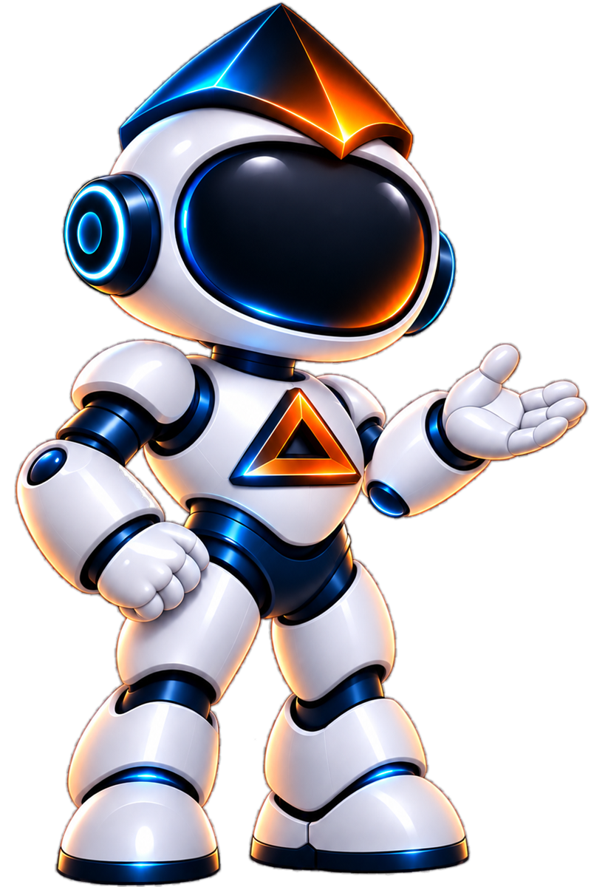

Olá, seja bem-vindo(a)! Acesse o PRISMA e centralize múltiplas visões em uma única direção.

PRISMA
Múltiplas visões, uma direção.
Online
Central de indicadores
Acesse o Prisma
Acesse com o seu e-mail corporativo e senha já cadastrada.